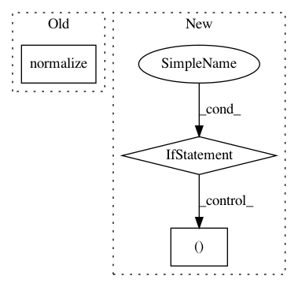

6d895c6a1f32c982ca3d75929bd0f303a16746d5,pynets/plotting.py,,plot_conn_mat,#Any#Any#Any#,12
Before Change
dpi_resolution = 500
conn_matrix = np.array(thresholding.normalize(np.array(thresholding.autofix(conn_matrix))))
rois_num = conn_matrix.shape[0]
plt.figure(figsize=(10, 10))
plt.imshow(conn_matrix, interpolation="nearest", vmax=float(1.0), vmin=float(-1.0), cmap=plt.cm.RdBu_r)
After Change
conn_matrix = np.array(np.array(thresholding.autofix(conn_matrix)))
[z_min, z_max] = -np.abs(conn_matrix).max(), np.abs(conn_matrix).max()
rois_num = conn_matrix.shape[0]
if rois_num < 100:
plt.gca().set_xticks(size="xx-small")
plt.gca().set_yticks(size="xx-small")
plot_matrix(conn_matrix, figure=(10, 10), label_names=label_names, vmax=z_max*0.8, vmin=z_min*0.8, reorder=True,
auto_fit=True, grid=False, colorbar=False)
else:
plot_matrix(conn_matrix, figure=(10, 10), vmax=z_max*0.8, vmin=z_min*0.8, auto_fit=True, grid=False,
colorbar=False)
plt.savefig(out_path_fig, dpi=dpi_resolution)
plt.close()
return
In pattern: SUPERPATTERN
Frequency: 3
Non-data size: 3
Instances
Project Name: dPys/PyNets
Commit Name: 6d895c6a1f32c982ca3d75929bd0f303a16746d5
Time: 2018-08-28
Author: dpisner@utexas.edu
File Name: pynets/plotting.py
Class Name:
Method Name: plot_conn_mat
Project Name: BindsNET/bindsnet
Commit Name: dcc5890dc2773090ab46a5e8bdd981a1104d9273
Time: 2018-06-29
Author: djsaunde@umass.edu
File Name: bindsnet/evaluation/__init__.py
Class Name:
Method Name: ngram
Project Name: commonsense/conceptnet5
Commit Name: 9582b206c63f01ca3f6990f50b0cd7754e2fe65b
Time: 2013-05-24
Author: rob@luminoso.com
File Name: conceptnet5/nodes.py
Class Name:
Method Name: make_concept_uri